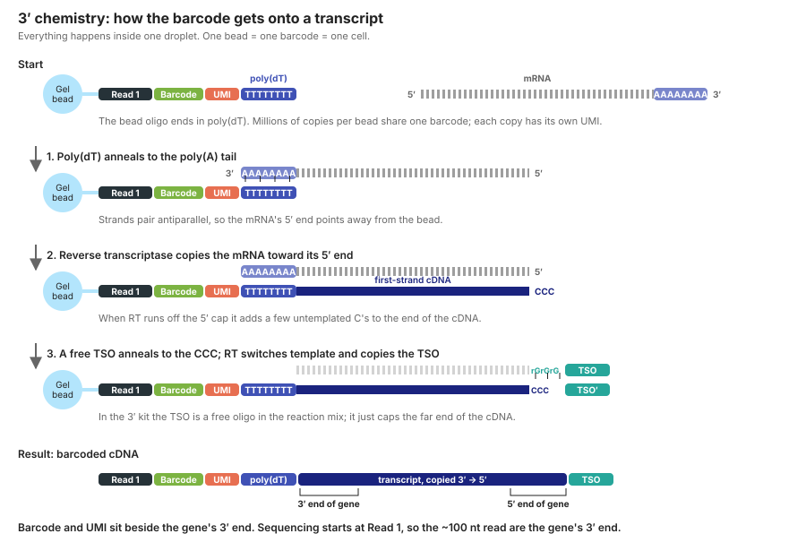
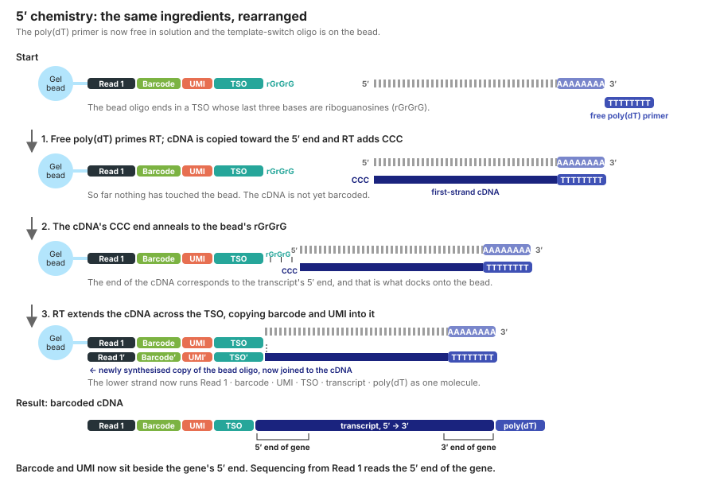
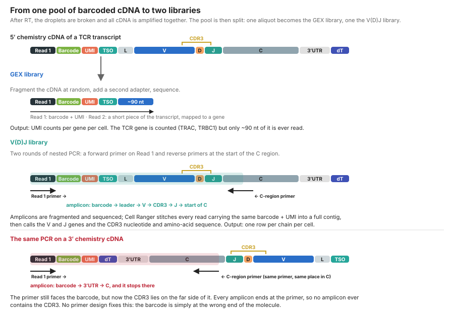

1 From Cells to Counts
Learning objectives
- Describe what happens to a cell between the sorter tube and a count matrix, and why the 5′ chemistry is required for paired TCR sequencing
- Interpret the structure of a sparse count matrix and know what a “cell” means to the software
- Compute and interpret the three standard QC metrics and choose thresholds appropriate for immune cells
- Detect doublets and understand why they matter more in mixed lymphocyte populations
1.1 Concepts
1.1.1 What the 10x Chromium actually measures
A droplet-based scRNA-seq experiment does three things: it isolates single cells in droplets, tags every mRNA molecule in a droplet with a cell barcode (shared by all molecules from that droplet) and a unique molecular identifier, UMI (unique to each captured molecule), and then converts those tagged molecules into a sequencing library.
1.1.2 How a transcript gets its barcode: 3′ chemistry
Inside each droplet there is one gel bead carrying millions of copies of a single oligonucleotide. Every copy has the same cell barcode (so everything in the droplet gets the same label) and a different UMI (so each captured molecule gets its own tag). The oligo’s job is to attach itself to a cDNA copy of every mRNA in the droplet. How it does that differs between the two chemistries, and the difference is where the barcode ends up on the molecule.

Reading Figure 1.1, step by step. The bead oligo is, from the bead outward: a sequencing-primer site (Read 1), the cell barcode, the UMI, and a stretch of ~30 T’s, poly(dT). mRNAs end in a poly(A) tail, so poly(dT) base-pairs with it (step 1). Reverse transcriptase (RT) then extends from the poly(dT), synthesising cDNA along the mRNA toward its 5′ end (step 2). When RT reaches the 5′ cap it adds a few untemplated cytosines, and a template-switch oligo (TSO) in the reaction mix, ending in three riboguanosines (rGrGrG), anneals to them; RT “switches template” and copies the TSO, so the cDNA ends with a known sequence that later serves as a PCR handle (step 3).
The result is a single molecule: Read 1 → barcode → UMI → poly(dT) → the transcript copied from its 3′ end to its 5′ end → TSO. Because sequencing starts from Read 1, the ~100 nt of transcript that actually get sequenced are the ones next to poly(dT): the 3′ end of the gene.
1.1.3 5′ chemistry: the same parts, rearranged

Reading Figure 1.2. Nothing chemically new happens; the two oligos have swapped places. Poly(dT) is now a free primer, so RT still starts at the poly(A) tail and copies toward the 5′ end, adding CCC when it runs off the cap (step 1). But the rGrGrG that captures those C’s is now on the bead oligo, so the cDNA docks onto the bead by its 5′-end-derived end (step 2). RT extends across the bead’s TSO, barcode and UMI, copying them into the cDNA (step 3).
The result is Read 1 → barcode → UMI → TSO → the transcript from its 5′ end to its 3′ end → poly(dT). Sequencing from Read 1 now reads the 5′ end of the gene. For ordinary gene counting this makes little difference: a 5′ read maps to a gene about as well as a 3′ read. For TCRs it makes all the difference.
1.1.4 From one cDNA pool to two libraries
After reverse transcription the droplets are broken and every cell’s barcoded cDNA is amplified together in one tube. That pool is then split. One aliquot is fragmented and sequenced as the gene expression (GEX) library. Another is put through a targeted PCR to make the V(D)J library. Both libraries descend from the same molecules, which is why a TCR and a transcriptome with the same barcode came from the same cell.

Why 3′ chemistry cannot give you a CDR3 (Figure 1.3). A TCR mRNA runs 5′ → leader → V → (D) → J → C → 3′ UTR → poly(A). The CDR3 is the V–(D)–J junction. The V(D)J library is made by PCR between a forward primer on the Read 1 site (at the barcode end) and reverse primers that sit at the very start of the constant region, just downstream of J. PCR copies only what lies between two primers.
- On 5′ cDNA the barcode sits beside the leader, so the region between the primers is leader → V → CDR3 → J → the first few bases of C. Every amplicon contains a complete CDR3, and it is still attached to the barcode and UMI. After fragmentation and sequencing, Cell Ranger collects all reads sharing a barcode and UMI, assembles them into a full-length contig, and calls the V gene, J gene and CDR3 from it.
- On 3′ cDNA the barcode sits beside the 3′ UTR. The same constant-region primer now points back toward the barcode across the 3′ UTR, and the amplicon is 3′ UTR → C. The CDR3 lies on the far side of the primer, outside every amplicon. You can detect that the cell expresses
TRBC1; you can never read which V, J and CDR3 it used. Moving the primer does not help, because any primer placed upstream of the CDR3 would be pointing away from the barcode.
The rule that follows: paired TCR (or BCR) and transcriptome data require the 5′ chemistry. If you are handed a 3′ dataset, repertoire analysis is not an option.
Note
The 5′ kit reads the 5′ end of every transcript, not just TCRs, so its gene-expression data look slightly different from 3′ data: genes with long 5′ UTRs or alternative first exons behave differently, and mitochondrial genes are detected at lower fractions. Do not compare 3′ and 5′ datasets without integration (Week 6).
1.1.5 The count matrix
After alignment and UMI collapsing, Cell Ranger produces a matrix with one row per gene and one column per cell barcode. Values are integer UMI counts, i.e. the number of distinct mRNA molecules detected per gene per cell. Two properties of this matrix drive every downstream decision:
- It is sparse. A typical T cell has ~1,000–3,000 detected genes out of ~36,000 in the annotation. Roughly 90–95% of entries are zero. Most zeros are not “the gene is off”; they are sampling failure, because a 10x experiment captures perhaps 10–20% of a cell’s mRNA. This is why we normalize, why we pool information across cells, and why a single zero means little.
- Library size varies enormously. One cell may yield 800 UMIs and its neighbour 12,000, for reasons that have nothing to do with biology (droplet-to-droplet capture efficiency, cell size, RNA content). We will address this in Week 2.
What is a “cell” to Cell Ranger? Nothing biological. Every droplet gets a barcode, including the vast majority that contain no cell and only ambient RNA from lysed cells in the suspension. Cell Ranger’s cell-calling step (EmptyDrops-based) separates barcodes whose expression profile differs from the ambient background from those that look like empty droplets. The filtered matrix contains the called cells; the raw matrix contains every barcode. You almost always start from the filtered matrix, but the raw matrix is needed for ambient-RNA correction tools (SoupX, CellBender).
1.1.6 Quality control metrics
Three per-cell metrics catch most problems:
| Metric | What it measures | Low values suggest | High values suggest |
|---|---|---|---|
nCount / total_counts |
Total UMIs in the barcode | Empty droplet, dying cell, or a small quiescent cell | Doublet, or a large/active cell |
nFeature / n_genes |
Number of genes with ≥1 UMI | Same as above | Same as above |
percent.mt / pct_counts_mt |
Fraction of UMIs from mitochondrial genes | — | Cytoplasmic mRNA leaked from a damaged membrane while mitochondria stayed put |
Immune-specific QC considerations
- Naive and resting lymphocytes are small and RNA-poor. They sit at the low end of the UMI distribution legitimately. Aggressive minimum-UMI thresholds selectively remove naive T and B cells, biasing your composition.
- Activated T cells, plasmablasts and cycling cells are RNA-rich and have high mitochondrial content because of oxidative metabolism. A fixed 5% mitochondrial cutoff, borrowed from other tissues, will delete real effector biology. Look at the distribution per cluster before deciding, and consider 10–15% for PBMCs, higher for tissue-derived or stimulated cells.
- Platelets and red blood cells appear as clusters with
PPBP/PF4orHBB/HBA1. They are not doublets or low-quality cells, just contaminants of a PBMC prep. Remove them explicitly after clustering, not with QC thresholds. - Ambient TCR transcripts. Because TCR mRNAs are abundant and lymphocytes lyse readily,
TRBC1/TRACcounts appear in monocytes. This is ambient contamination, not myeloid cells expressing a TCR.
1.1.7 Doublets
At standard 10x loading (~5–10k cells recovered), 4–8% of “cells” are two cells that shared a droplet. Heterotypic doublets (a T cell plus a monocyte) form spurious intermediate clusters and are the classic source of “novel” cell types in reviews. Homotypic doublets (two CD4 T cells) are nearly undetectable by expression and mostly harmless for clustering, but they matter for TCR-seq because a doublet has two α and two β chains, which looks like a rare dual-TCR cell.
Doublet detectors (scDblFinder, Scrublet, DoubletFinder) all work the same way: they create synthetic doublets by adding pairs of real cells together, then flag real cells that look more like the synthetic doublets than like other real cells. Run them per 10x lane, never on a merged object, because doublets can only form within a lane.
1.2 Hands-on
We assume you have completed the Setup appendix and have filtered_feature_bc_matrix.h5 in data/raw/.
1.2.1 Load the count matrix
library(Seurat)
library(ggplot2)
library(dplyr)
counts <- Read10X_h5("data/raw/filtered_feature_bc_matrix.h5")
# 5' Immune Profiling runs may return a list if antibody capture was included
if (is.list(counts)) counts <- counts[["Gene Expression"]]
dim(counts) # genes x cells
counts[1:5, 1:5] # a sparse dgCMatrix: "." means zero
mean(counts == 0) # fraction of zeros, typically > 0.9
pbmc <- CreateSeuratObject(
counts = counts,
project = "pbmc_5p",
min.cells = 3, # drop genes seen in < 3 cells
min.features = 200 # drop barcodes with < 200 genes (very permissive)
)
pbmcimport scanpy as sc
import numpy as np
import pandas as pd
import matplotlib.pyplot as plt
sc.settings.verbosity = 2
sc.settings.set_figure_params(dpi=100, facecolor="white")
adata = sc.read_10x_h5("data/raw/filtered_feature_bc_matrix.h5")
adata.var_names_make_unique()
adata # AnnData: obs = cells, var = genes, X = counts
adata.X[:5, :5].toarray()
1 - adata.X.nnz / np.prod(adata.shape) # fraction of zeros
# Very permissive first pass; real thresholds come after inspection
sc.pp.filter_cells(adata, min_genes=200)
sc.pp.filter_genes(adata, min_cells=3)
adata
Note
Scanpy stores cells as rows and genes as columns (cells × genes); Seurat stores genes as rows and cells as columns (genes × cells). This is the most common source of confusion when reading both.
1.2.2 Compute QC metrics
# Human mitochondrial genes start with "MT-"; mouse uses "mt-"
pbmc[["percent.mt"]] <- PercentageFeatureSet(pbmc, pattern = "^MT-")
pbmc[["percent.ribo"]] <- PercentageFeatureSet(pbmc, pattern = "^RP[SL]")
pbmc[["percent.hb"]] <- PercentageFeatureSet(pbmc, pattern = "^HB[AB]")
VlnPlot(pbmc,
features = c("nFeature_RNA", "nCount_RNA", "percent.mt"),
ncol = 3, pt.size = 0)
# Relationships between metrics are more informative than any one alone
FeatureScatter(pbmc, "nCount_RNA", "percent.mt") +
FeatureScatter(pbmc, "nCount_RNA", "nFeature_RNA")
# Log scale reveals the low-UMI tail where empty droplets and debris hide
ggplot(pbmc@meta.data, aes(nCount_RNA, nFeature_RNA, colour = percent.mt)) +
geom_point(size = 0.3) + scale_x_log10() + scale_y_log10() +
scale_colour_viridis_c()adata.var["mt"] = adata.var_names.str.startswith("MT-") # "mt-" for mouse
adata.var["ribo"] = adata.var_names.str.startswith(("RPS", "RPL"))
adata.var["hb"] = adata.var_names.str.contains("^HB[AB]")
sc.pp.calculate_qc_metrics(
adata, qc_vars=["mt", "ribo", "hb"],
percent_top=[20], log1p=True, inplace=True
)
sc.pl.violin(
adata, ["n_genes_by_counts", "total_counts", "pct_counts_mt"],
jitter=0.4, multi_panel=True
)
sc.pl.scatter(adata, x="total_counts", y="pct_counts_mt")
sc.pl.scatter(adata, x="total_counts", y="n_genes_by_counts", color="pct_counts_mt")1.2.3 Detect doublets
# scDblFinder (Bioconductor) is fast and well-calibrated
library(scDblFinder)
library(SingleCellExperiment)
sce <- as.SingleCellExperiment(pbmc)
set.seed(1)
sce <- scDblFinder(sce) # add samples = "lane" if you have several lanes
pbmc$doublet_score <- sce$scDblFinder.score
pbmc$doublet_class <- sce$scDblFinder.class
table(pbmc$doublet_class)# Scrublet is built into scanpy >= 1.10
sc.pp.scrublet(adata, random_state=0) # add batch_key="lane" for several lanes
adata.obs["predicted_doublet"].value_counts()
sc.pl.scrublet_score_distribution(adata)1.2.4 Filter
Choose thresholds from your distributions, not from a tutorial. The values below suit a healthy-donor PBMC run; write down what you chose and why.
pbmc <- subset(pbmc,
nFeature_RNA > 300 &
nFeature_RNA < 5000 &
percent.mt < 12 &
doublet_class == "singlet"
)
pbmc
saveRDS(pbmc, "data/processed/01_pbmc_qc.rds")keep = (
(adata.obs["n_genes_by_counts"] > 300) &
(adata.obs["n_genes_by_counts"] < 5000) &
(adata.obs["pct_counts_mt"] < 12) &
(~adata.obs["predicted_doublet"].astype(bool))
)
print(f"Keeping {keep.sum()} of {adata.n_obs} cells")
adata = adata[keep].copy()
adata.write_h5ad("data/processed/01_pbmc_qc.h5ad")1.3 Pitfalls
- Filtering on a hard upper UMI cutoff to remove doublets. It removes plasmablasts, proliferating T cells and monocytes preferentially. Use a doublet detector instead and keep the upper bound generous.
- Using a 5% mitochondrial cutoff because a tutorial did. Set it from the distribution and re-examine per cluster in Week 3.
- Running doublet detection on merged lanes. Doublets cannot form across lanes; merging inflates the synthetic-doublet space with impossible pairs.
- Forgetting the raw matrix exists. If you later want SoupX or CellBender, you need
raw_feature_bc_matrix; download it now. - Treating zeros as evidence of absence. A T cell with zero
CD4UMIs is usually a CD4 T cell that was under-sampled. This is why we never annotate single cells from single genes.
1.4 Exercises
- Plot
percent.mtagainstnCount_RNAon a log-x axis. Describe the two or three populations you see and propose a biological identity for each. - Re-run the filter with mitochondrial thresholds of 5%, 10% and 20%. How many cells does each remove? In Week 3 you will check which clusters lost cells.
- Cell Ranger reported a certain number of cells. How many does your filtered object contain? Where did the difference go?
- (Stretch) Load the raw matrix and plot the barcode-rank (“knee”) plot: total UMIs per barcode, sorted, on log–log axes. Mark where Cell Ranger placed its cell-calling threshold.